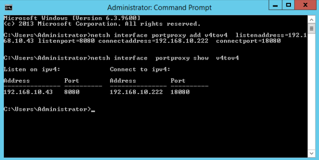
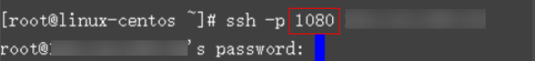

Requirement
It is expected that the EIP and port on ECS 1 accessed from the Internet can be automatically redirected to the EIP and port on ECS 2.
Windows
For example, to redirect port 8080 on ECS 1 bound with EIP 192.168.10.43 to port 18080 on ECS 2 bound with EIP 192.168.10.222, perform the following operations on ECS 1.

Ensure that the desired ports have been enabled on the ECS security group and firewall.
- Open the cmd window on the ECS and run the following command: The ECS running Windows Server 2012 is used as an example.
netsh interface portproxy add v4tov4 listenaddress=192.168.10.43 listenport=8080 connectaddress=192.168.10.222 connectport=18080
To cancel port redirection, run the following command:
netsh interface portproxy delete v4tov4 listenaddress=192.168.10.43 listenport=8080
- Run the following command to view all port redirections configured on the ECS:
netsh interface portproxy show v4tov4
Figure 1 Port redirections on Windows

Linux
For example, to redirect port 1080 on ECS 1 to port 22 on ECS 2 with the following configurations:
Private IP address and EIP of ECS 1: 192.168.72.10 and 123.xxx.xxx.456
Private IP address of ECS 2: 192.168.72.20
- Ensure that the desired ports have been enabled on the ECS security group and firewall.
- Ensure that the source/destination check function is disabled.
On the ECS details page, click NICs and disable Source/Destination Check.
By default, the source/destination check function is enabled. When this function is enabled, the system checks whether source IP addresses contained in the packets sent by ECSs are correct. If the IP addresses are incorrect, the system does not allow the ECSs to send the packets. This mechanism prevents packet spoofing, thereby improving system security. However, this mechanism prevents the packet sender from receiving returned packets. Therefore, disable the source/destination check.
- Log in to Linux ECS 1.
- Run the following commands to add rules to the nat table in iptables so that the access to port 1080 on ECS 1 can be redirected to port 22 on ECS 2:
iptables -t nat -A PREROUTING -d 192.168.72.10 -p tcp --dport 1080 -j DNAT --to-destination 192.168.72.20:22
iptables -t nat -A POSTROUTING -d 192.168.72.20 -p tcp --dport 22 -j SNAT --to 192.168.72.10
- Run the following command to log in to port 1080 on ECS 1 for check:
ssh -p 1080 123.xxx.xxx.456
Figure 2 Port redirections on Linux
Enter the password to log in to ECS 2 with hostname ecs-inner.
Figure 3 Logging in to ECS 2